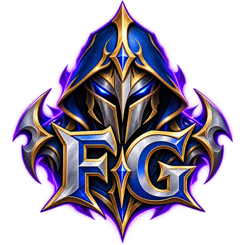
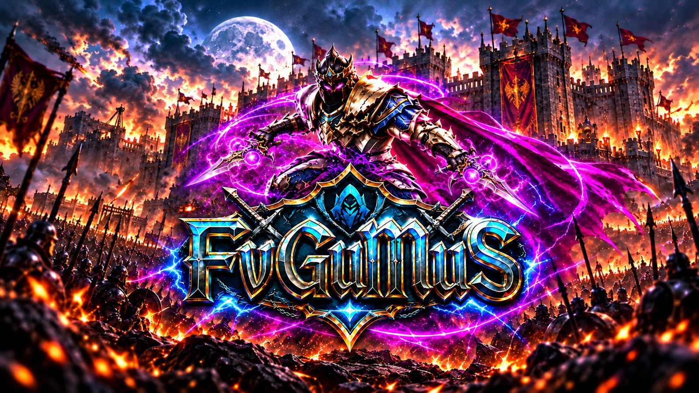
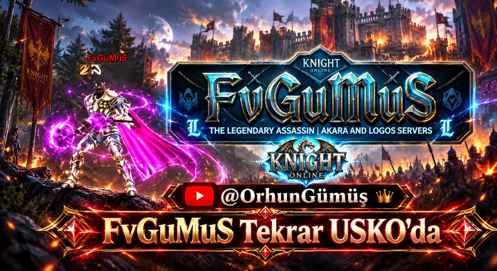

⚔️
Assassin dünyası
FvGuMuS ile assassin oynanışı, Shard tutkusu ve savaş meydanından anlar.
2009'da yarım kalan macera, yıllar sonra yeniden başlıyor. Eski dostlar, yeni anılar ve Knight Online heyecanı için yerini al.
Selam, ben FvGuMuS. Knight Online'ı 2009 yılında bıraktım. Şimdi, yıllar sonra, eski günlerin heyecanını yeniden yaşamak için USKO'ya dönüyorum.
Moradon'un kalabalığı, unutulmaz savaşlar ve kurulan dostluklar… Bu sefer macerayı YouTube'da birlikte yaşayacağız. Eski bir oyuncuysan ya da yeni başlıyorsan, hoş geldin!

Dönüş yolculuğumuzda bizi bekleyen Knight Online dünyasını birlikte keşfedelim.
FvGuMuS ile assassin oynanışı, Shard tutkusu ve savaş meydanından anlar.
USKO’ya dönüş yolunda oyun içi karşılaşmalar, mücadeleler ve unutulmaz anlar.
Moradon anıları, eski oyuncular ve yeni tanışmalar. Bu yolculuk birlikte daha güzel.
Knight Online macerasına verilen uzun bir mola.
FvGuMuS yeniden USKO dünyasında.
Yaşananları YouTube üzerinden birlikte paylaşma zamanı.

Kanalın Knight Online ruhunu taşıyan görselleri.

Hangisi seni eski günlere götürüyor? Seçimini burada görebilir, anılarını YouTube'da yorumlara yazabilirsin.
YouTube'da buluşalım ↗2009'da Knight Online'a ara veren ve şimdi USKO'ya dönerek yolculuğunu paylaşan bir oyuncu.
YouTube kanalına sayfadaki kırmızı butonlardan ulaşabilirsin.
Hayır, burası FvGuMuS'un kişisel kanal ve topluluk sayfasıdır.
Oyun içi maceralar, savaşlar ve FvGuMuS'un dönüş yolculuğu.